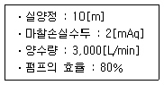
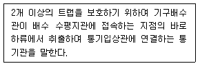
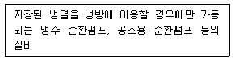
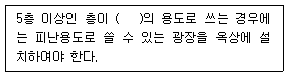
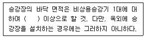
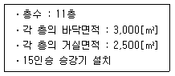
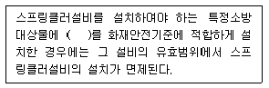
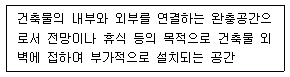
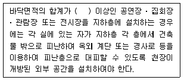

건축설비산업기사 (2015-03-08 기출문제)
1과목: 건축일반
1. 한쪽 박공면은 원호로 하고 대립되는 박공면은 직선으로 하여 평행이동 시켜서 이루는 곡면으로 만들어지는 셸은?
- HP형 셸
- 원통형 셸
- 타원포물선곡면 셸
- 코노이드 셸
(정답률: 76%)

2. 도서관 내부의 서고 채광에 대한 설명 중 틀린 것은?
- 서고 내부는 자연채광으로 하는 편이 좋다.
- 서고 조명은 서가 표면 통로를 균등하게 조명한다.
- 서고 통로는 충분하게 조명하며 눈이 부시지 않게 한다.
- 서고 조명기구는 파손이 적고 취급이 용이한 기구를 사용한다.
(정답률: 94%)
3. 철골보의 종류에서 공조용 덕트가 직각으로 관통할 수 없는 것은?
- 허니컴보
- 래티스보
- 상자형보
- 유공웨브보
(정답률: 60%)
4. 가구식 구조물의 횡력에 대한 안전한 구조계획으로 가장 타당한 것은?
- 기둥의 단면을 크게 한다.
- 샛기둥을 적게 설치한다.
- 가새를 유효하게 설치한다.
- 기둥과 보의 단면계수 값을 감소시킨다.
(정답률: 86%)
5. 병원의 수술실 계획으로 틀린 것은?
- 수술실 내 모든 전기 기구는 스파크 방지장치가 필요하다.
- 전체 건물의 중앙공조설비를 이용함이 바람직하다.
- 실내는 온도 26.6[℃] 이상, 습도 55% 이상으로 유지한다.
- 내부 마감색은 녹색 계통의 색으로 한다.
(정답률: 85%)
6. 주택설계의 방향성에 대한 내용으로 틀린 것은?
- 생활의 쾌적함이 증대되도록 한다.
- 가사노동이 경감되도록 한다.
- 좌식과 입식을 혼용한다.
- 가족 생활을 희생하더라도 손님 접대를 위한 공간을 충분히 배려한다.
(정답률: 86%)
7. 은행의 공간 및 평면 계획 시 유의할 점으로 틀린 것은?
- 출입문은 도난방지상 바깥여닫이로 하는 것이 타당하다.
- 겨울철 기온이 낮은 우리나라에서는 주출입구에 전실(前室)을 설치하는 것이 좋다.
- 큰 건물의 경우에도 고객 출입구는 되도록 1개소로 한다.
- 업무내부의 일의 흐름은 되도록 고객이 알기 어렵게 한다.
(정답률: 86%)
8. 주거 건축의 단지계획에 있어서 교통계획에 대한 내용으로 틀린 것은?
- 근린주구 단위 내부로의 자동차 통과진입을 극소화한다.
- 안전을 위하여 고밀도 지역은 진입구와 되도록 멀리 배치시킨다.
- 2차도로 체계는 주도로와 연결되어 쿨드삭을 이루게 한다.
- 통행량이 많은 고속도로는 근린주구 단위를 분리시킨다.
(정답률: 70%)
9. 호텔 건축계획에 대한 설명으로 틀린 것은?
- 커머셜(commercial) 호텔은 도시의 가장 번화한 곳에 위치한다.
- 아파트먼트(apartment) 호텔은 장기간 체재하는데 적합한 호텔이다.
- 클럽 하우스(club house)는 스포츠시설을 위주로 이용되는 숙박시설이다.
- 리조트(resort) 호텔은 관광객, 단기 체재자 등을 대상으로 한 호화로운 설비를 하고 있다.
(정답률: 67%)
10. 다음 슬래브 형틀 중 무지주 공법을 적용하기 어려운 것은?
- 하프피시(Half precast concrete)
- 데크플레이트(Deck plate)
- 유로폼(Euro form)
- 보우빔(Bow beam)
(정답률: 54%)
11. 상점건축의 정면(facade) 구성에서 필요한 광고 요소가 아닌 것은?
- 주의(Attention)
- 기억(Memory)
- 특성(Characteristic)
- 행동(Action)
(정답률: 83%)
12. 전학급을 2개 집단으로 하고 한 쪽이 일반교실을 사용할 때 다른 쪽은 특별교실을 사용하는 학교운영 방식은?
- 달톤형
- 플래툰형
- 종합교실형
- 교과교실형
(정답률: 83%)
13. 철골기둥을 콘크리트 기초에 고정하기 위하여 사용하는 것은?
- 턴버클
- 앵커볼트
- TS 볼트
- 어스앵커
(정답률: 81%)
14. 병원 설립을 위한 기본계획 시 검토하여야 할 사항으로 틀린 것은?
- 부지선정을 위해서는 병원이 건립될 지역, 면적 등이 함께 검토되어야 한다.
- 병원의 규모는 병상규모, 입원환자의 배분율의 추정을 통하여 산정한다.
- 병원의 시설계획상 주요구성 부분의 동선이 교차되도록 계획되어야 한다.
- 장래의 확장, 변경 등을 고려하여 계획되어야 한다.
(정답률: 88%)
15. 아파트의 평면 형식에 의한 분류 중 계단실형에 대한 설명으로 틀린 것은?
- 주호내의 주거성 및 독립성이 좋다.
- 코어의 이용률이 높아 경제적으로 유리하다.
- 동선이 짧으므로 출입이 용이하다.
- 통행부의 면적이 작으므로 건물의 이용도가 높다.
(정답률: 70%)
16. 철근 콘크리트구조의 보 양단부에 늑근을 많이 배치하는 이유로 가장 타당한 것은?
- 콘크리트의 강도를 보다 높이기 위하여
- 철근과 콘크리트의 부착력을 증가시키기 위하여
- 보에 일어나는 휨 모멘트에 저항하기 위하여
- 보에 발생하는 전단력에 저항하기 위하여
(정답률: 68%)
17. 사무소 건축의 개실 시스템에 대한 설명으로 옳은 것은?
- 방 길이에는 변화를 줄 수 있으나 방 깊이에는 변화를 줄 수 없다.
- 전면적을 유용하게 이용할 수 있다.
- 개방식 배치보다 공사비가 저렴하다.
- 소음이 들리고 독립성이 결핍되어 있다는 결점이 있다.
(정답률: 68%)
18. 목조 경골 지붕틀에서 사용되는 구성 부재로 옳은 것은?
- ㅅ자보 –빗대공 - 평보
- ㅅ자보 –빗대공 - 중도리
- 빗대공 –평보 - 중도리
- ㅅ자보 –평보 - 중도리
(정답률: 63%)
19. 철골구조의 장점으로 거리가 먼 것은?
- 진동에 강하여 고층 고급주택에 적합하다.
- 재질이 균등하며 강도가 크다.
- 스팬이 큰 대규모 건축물에 적합하다.
- 공장제작으로 현장 설치작업이 단축된다.
(정답률: 68%)
20. 사무소건축의 코어시스템에 관한 설명 중 틀린 것은?
- 공용부분을 한 곳에 집약시킴으로써 사무소의 유효면적이 증대된다.
- 설비시설을 집약시킬 수 있다.
- 편심 코어형은 바닥면적이 큰 경우에 적합하며, 2방향 피난에 이상적이다.
- 중심 코어형은 내부공간과 외관이 획일적으로 되기 쉽다.
(정답률: 84%)
2과목: 위생설비
21. 기구배수 부하단위(fuD) 산정에 기준이 되는 기구는?
- 세면기
- 대변기
- 샤워기
- 욕조
(정답률: 84%)
22. LPG와 LNG에 관한 설명으로 옳지 않은 것은?
- LNG는 공기보다 가볍다.
- LPG는 메탄(CH4)이 주성분이다.
- LNG는 액화천연가스를 의미한다.
- LPG는 연소시 이론공기량이 많다.
(정답률: 74%)
23. 다음 중 펌프 운전시 캐비테이션을 방지하기 위한 대책으로 가장 알맞은 것은?
- 흡입양정을 낮춘다.
- 토출양정을 낮춘다.
- 에어챔버를 설치한다.
- 마찰손실수두를 줄인다.
(정답률: 66%)
24. 사이펀 볼텍스식 대변기에 관한 설명으로 옳지 않은 것은?
- 공기의 흔입이 거의 없고 세정시 소음이 작다.
- 볼탭부에 진공브레이커를 설치하여 역류를 방지한다.
- 세정수의 와류작용과 함께 사이펀작용을 발생시켜 오물을 배출한다.
- 급수부 끝과 변기의 물 넘침선과의 사이에 토수구 공간이 있어 오물의 부착이 적다.
(정답률: 58%)
25. 배수관에서 청소구(clean out)를 설치하여야 하는 장소에 속하지 않는 것은?
- 배수수직관의 최상부
- 배관길이가 긴 배수수평관의 도중
- 배수수평지관 및 배수수평주관의 기점
- 배수관이 45°를 초과하는 각도에서 방향을 전환하는 개소
(정답률: 67%)
26. 단면적이 214[cm2] 인 배관에 매분 4.5[m3]의 물이 흐를 경우, 물의 속도를 계산하면 얼마인가?
- 0.00024[m/sec]
- 0.014[m/sec]
- 3.5[m/sec]
- 4.5[m/sec]
(정답률: 46%)
27. 급탕설비에 관한 설명으로 옳지 않은 것은?
- 배관은 적정한 압력손실 상태에서 피크시를 충족시킬 수 있어야 한다.
- 냉수, 온수를 혼합 사용해도 압력차에 의한 온도변화가 없도록 하여야 한다.
- 개방형 급탕시스템에는 온도상승에 의한 압력을 도피시킬 수 있는 팽창탱크를 설치하여야 한다.
- 배관거리가 30[m]를 초과하는 중앙급탕방식에서는 배관으로부터 열 손실을 보상하고 일정한 급탕온도 유지를 위하여 환탕관과 순환펌프를 설치한다.
(정답률: 69%)
28. 다음과 같은 조건에 있는 양수펌프의 소요동력은?

- 1.22[kW]
- 6.13[kW]
- 7.35[kW]
- 8.57[kW]
(정답률: 41%)
29. 다음 중 배관의 부식 요인과 가장 거리가 먼 것은?
- 배관의 재질
- 배관 내 유속
- 배관 내 수질
- 배관의 지지 간격
(정답률: 86%)
30. 배관용 동관을 M, L 및 K 타입으로 구분하는 기준이 되는 것은?
- 관의 두께
- 관의 외경
- 관의 재질
- 배관 1본의 길이
(정답률: 83%)
31. 스프링클러헤드의 방수구에서 유출되는 물을 세분시키는 작용을 하는 것은?
- 노즐
- 가지배관
- 디프렉타
- 솔러레버
(정답률: 73%)
32. 다음 중 공동주택 단지의 급수설계를 할 때 가장 먼저 이루어져야 할 사항은?
- 급수량의 산정
- 수수조의 크기 산정
- 급수관 재료의 결정
- 수도 인입관의 관경 선정
(정답률: 89%)
33. 정화조 중 유입된 오수를 혐기성균에 의하여 소화작용으로 분리 침전이 이루어지도록 하는 곳은?
- 부패조
- 여과조
- 산화조
- 소독조
(정답률: 78%)
34. 다음 설명에 알맞은 통기관의 종류는?

- 회로통기관
- 신정통기관
- 각개통기관
- 결합통기관
(정답률: 66%)
35. 급수방식 중 고가수조방식에 관한 설명으로 옳은 것은?
- 대규모의 급수 수요에 대응할 수 없다.
- 단수시에도 일정량의 급수를 계속할 수 있다.
- 급수공급압력의 변화가 심하고 취급이 까다롭다.
- 위생성 및 유지‧관리 측면에서 가장 바람직한 방식이다.
(정답률: 85%)
36. 강제순환식 급탕설비에서 온수의 공급온도가 60[℃]이고 반송온도가 57[℃]이며, 배관 전계통의 열손실이 5,000 [W]일 경우 순환펌프의 순환수량은? (단, 물의 비열은 4.2[kJ/kg ‧ K]이다.)
- 16.7[L/min]
- 23.8[L/min]
- 166.7[L/min]
- 250.0[L/min]
(정답률: 52%)
37. 옥내소화전설비의 송수구 설치 위치로 옳은 것은?
- 지면으로부터 높이 0.5m 이상 1m 이하의 위치
- 지면으로부터 높이 0.5m 이상 1.5m 이하의 위치
- 지면으로부터 높이 1m 이상 1.5m 이하의 위치
- 지면으로부터 높이 1m 이상 2m 이하의 위치
(정답률: 75%)
38. 급탕설비의 안전장치에 관한 설명으로 옳지 않은 것은?
- 도피관의 배수는 간접배수로 한다.
- 팽창관 및 도피관에는 밸브류를 설치한다.
- 도피관은 팽창탱크 수면보다 높게 입상한다.
- 안전밸브는 가열장치 내의 압력이 설정압력을 넘는 경우에 압력을 도피시키기 위해 설치하는 밸브이다.
(정답률: 65%)
39. 보틀트랩에 관한 설명으로 옳지 않은 것은?
- 청소가 용이하다.
- 자기사이펀 작용으로 인한 봉수파괴가 어렵다.
- 내부에 격벽이 있어 배수 트랩으로 많이 사용된다.
- P형, S형, U형 등의 트랩에 비하여 자정작용이 떨어진다.
(정답률: 61%)
40. 고층건물에서 급수 계통을 조닝(zoning)하는 가장 주된 이유는?
- 급수의 역류를 방지하기 위하여
- 저층부의 수압을 줄이기 위하여
- 배관의 크로스 커넥션을 방지하기 위하여
- 배관의 보수점검을 용이하게 하기 위하여
(정답률: 59%)
3과목: 공기조화설비
41. 다음 부하 중 그 값이 가장 큰 것은?
- 실내부하
- 외기부하
- 열원부하
- 공조기부하
(정답률: 71%)
42. 겨울철 중력환기를 위한 급기구와 배기구의 설치위치로 가장 알맞은 것은?
- 급기구 및 배기구를 모두 낮은 곳에 설치
- 급기구 및 배기구를 모두 높은 곳에 설치
- 급기구는 낮은 곳, 배기구는 높은 곳에 설치
- 급기구는 높은 곳, 배기구는 낮은 곳에 설치
(정답률: 79%)
43. 스플릿 댐퍼에 관한 설명으로 옳지 않은 것은?
- 주덕트의 압력강하가 적다.
- 정밀한 풍량조절이 용이하다.
- 누설이 많아 폐쇄용으로 사용이 곤란하다.
- 분기부에 설치하여 풍량조절용으로 사용된다.
(정답률: 60%)
44. 펌프의 양정이 20[mAq], 회전속도가 1,500[rpm], 배출량이 1.5[m3/min]일 때, 이 펌프의 비교회전수[rpm‧m3/min∙m]는?
- 125
- 194
- 210
- 248
(정답률: 34%)
45. 다음의 공기조화방식 중 전공기 방식에 속하지 않는 것은?
- 단일덕트방식
- 이중덕트방식
- 유인유니트방식
- 멀티존유니트방식
(정답률: 56%)
46. 흡수식 냉동기의 사이클로 옳은 것은?
- 증발기 - 재생기 - 흡수기 - 응축기
- 증발기 - 흡수기 - 재생기 - 응축기
- 흡수기 - 응축기 - 재생기 - 증발기
- 흡수기 - 증발기 - 응축기 - 재생기
(정답률: 59%)
47. 개방회로방식과 밀폐회로방식에 관한 설명으로 옳지 않은 것은?
- 밀폐회로방식은 순환수가 공기와 접촉하지 않으므로 물처리비가 많이 든다.
- 밀폐회로방식은 장치내에 있는 물의 팽창을 위하여 팽창탱크를 갖추어야 한다.
- 개방회로방식은 보통 축열방식이나 개방식 냉각탑의 냉각수배관 등에 응용된다.
- 개방회로방식은 물이 대기 중에 노출되므로 수중에 산소량이 많아서 배관부식이 심하기 때문에 백가스관을 사용한다.
(정답률: 56%)
48. 지역난방에 관한 설명으로 옳지 않은 것은?
- 연료비가 절감된다.
- 대기오염을 줄일 수 있다.
- 보일러 설비가 대용량이 된다.
- 각 세대의 설비 스페이스가 증대된다.
(정답률: 73%)
49. 냉동기 주변 배관에 관한 설명으로 옳지 않은 것은?
- 냉각기의 출입구에는 밸브를 설치한다.
- 응축기의 출입구에는 밸브를 설치한다.
- 냉동기의 냉수배관 입구측에는 스트레이너를 설치한다.
- 냉수 배관의 가장 높은 부분에는 물빼기밸브를 설치한다.
(정답률: 72%)
50. 장방형 덕트 단면의 아스펙트비는 최대 얼마 이하로 하는 것이 원칙인가?
- 2 : 1
- 3 : 1
- 4 : 1
- 5 : 1
(정답률: 82%)
51. 공기조화설비의 공기청정장치에 관한 설명으로 옳지 않은 것은?
- 원칙적으로 부유분진에는 에어워셔를 설치한다.
- 에어필터(HEPA필터 제외)의 면풍속은 2.5[m/s]를 표준으로 한다.
- 에어필터(HEPA필터 제외)의 공기저항은 초기저항의 2배를 표준으로 한다.
- 일반적인 사무용 건축물에 설치하는 경우에는 주로 부유분진을 주처리 대상으로 한다.
(정답률: 48%)
52. 전열교환기에 관한 설명으로 옳지 않은 것은?
- 현열과 잠열을 동시에 교환한다.
- 공기조화용 송풍량이 비교적 많은 곳에서 유리하다.
- 열회수율이 좋고, 고온측 및 저온측 유체의 누설이 없는 것을 사용한다.
- 배열회수에 이용되는 배기는 원칙적으로 주방 및 보일러의 배기가스를 이용한다.
(정답률: 69%)
53. 내경 50[mm]인 파이프내로 2[m/s]의 속도로 온수가 흐르고 있다. 배관길이 20[m]에 대한 직관부 마찰손실은? (단, 관 마찰계수는 0.02이다.)
- 1.6[mAq]
- 1.9[mAq]
- 2.7[mAq]
- 3.2[mAq]
(정답률: 37%)
54. 다음 중 시간지연(time-lag)현상과 가장 관계가 깊은 것은?(오류 신고가 접수된 문제입니다. 반드시 정답과 해설을 확인하시기 바랍니다.)
- 습도
- 열용량
- 일사량
- 열관류율
(정답률: 41%)
55. 공기조화기 내의 가습이나 감습 장치에 엘리미네이터(eliminator)를 설치하는 가장 주된 목적은?
- 폐열을 회수하기 위하여
- 분진 등을 정화하기 위하여
- 내부의 청소 및 점검을 위하여
- 분무수가 밖으로 나가는 것을 방지하기 위하여
(정답률: 78%)
56. 화장실, 부엌 및 욕실 등과 같이 부압을 유지해야 하는 공간에 적용되는 환기 방식은?
- 제1종 환기
- 제2종 환기
- 제3종 환기
- 자연환기
(정답률: 76%)
57. 냉동기를 냉각 목적으로 할 경우의 성적계수를 COPC, 히트펌프로 사용될 경우의 성적계수를 COPH 라할 때, 다음 식 중 옳은 것은?
- COPH = COPC
- COPH = 1/COPC
- COPH = COPC - 1
- COPH = COPC + 1
(정답률: 57%)
58. 다음 공기의 성질 중 가열했을 때 변하지 않는 것은?
- 건구온도
- 습구온도
- 절대습도
- 상대습도
(정답률: 73%)
59. 다음의 냉방부하 중 현열부하만 발생하는 것은?
- 인체의 발생열량
- 유리로부터의 취득열량
- 극간풍에 의한 취득열량
- 실내 기구로부터의 발생열량
(정답률: 61%)
60. 다음 중 습공기선도상에 나타나 있지 않은 것은?
- 현열비
- 엔탈피
- 엔트로피
- 수증기분압
(정답률: 72%)
4과목: 건축설비관계법규
61. 문화 및 집회시설 중 공연장의 관람석과 접하는 복도의 유효너비는 최소 얼마 이상이어야 하는가? (단, 당해 층의 바닥면적의 합계가 700[m2]인 경우)
- 1.5[m]
- 1.8[m]
- 2.4[m]
- 2.7[m]
(정답률: 52%)
62. 특정소방대상물이 숙박시설인 경우, 자동화재탐지설비를 설치하여야 하는 연면적 기준은?
- 600[m2] 이상
- 1,000[m2] 이상
- 1,500[m2] 이상
- 2,000[m2] 이상
(정답률: 51%)
63. 건축물의 냉방설비에 대한 설치 및 설계기준상 다음과 같이 정의되는 것은?

- 1차측 설비
- 2차측 설비
- 부분축냉설비
- 전체축냉설비
(정답률: 59%)
64. 재해예방, 소방시설 설치 ‧ 유지 및 안전관리에 관한 법률 시행령에 따른 피난층의 정의로 옳은 것은?
- 지상 1층
- 지하와 지상이 연결되는 통로가 있는 층
- 곧바로 지상으로 갈 수 있는 출입구가 있는 층
- 곧바로 무창층으로 갈 수 있는 직통계단이 있는 층
(정답률: 80%)
65. 판매시설로서 해당 용도로 사용되는 부분의 바닥면적의 합계가 최소 얼마 이상인 경우 연결살수설비를 설치하여야 하는가?
- 500[m2]
- 1,000[m2]
- 2,000[m2]
- 3,000[m2]
(정답률: 40%)
66. 철골조로서 피복두께와 상관없이 내화구조로 인정되는 것은?
- 계단
- 기둥
- 바닥
- 내력벽
(정답률: 63%)
67. 가스∙급수∙ 배수∙ 환기설비를 설치하는 경우 건축기계설비기술사 또는 공조냉동기계술사의 협력을 받아야하는 대상 건축물에 속하지 않는 것은?
- 아파트
- 연립주택
- 숙박시설로서 해당 용도에 사용되는 바닥면적의 합계가 2,000[m2]인 건축물
- 업무시설로서 해당 용도에 사용되는 바닥면적의 합계가 2,000[m2]인 건축물
(정답률: 54%)
68. 다음의 옥상광장 등의 설치에 관한 기준 내용 중( ) 안에 들어갈 수 없는 건축물의 용도는?

- 종교시설
- 의료시설
- 장례식장
- 판매시설
(정답률: 56%)
69. 다음은 비상용승강기 승강장의 구조에 관한 기준 내용이다. ( ) 안에 알맞은 것은?

- 4[m2]
- 5[m2]
- 6[m2]
- 8[m2]
(정답률: 78%)
70. 다음의 병원에 설치하여야 하는 승용승강기의 최소 대수는?

- 4대
- 5대
- 8대
- 9대
(정답률: 52%)
71. 건축물의 에너지절약 설계기준에 따른 건축부분의 권장사항으로 옳지 않은 것은?
- 외벽 부위는 외단열로 시공한다.
- 건물의 창호는 가능한 작게 설계하고, 특히 열손실이 많은 북측의 창면적은 최소화한다.
- 건축물은 대지의 향, 일조 및 주풍향 등을 고려하여 배치하며, 남향 또는 남동향 배치를 한다.
- 거실의 층고 및 반자 높이는 실의 용도와 기능에 지장을 주지 않는 범위 내에서 가능한 높게 한다
(정답률: 81%)
72. 다음의 특정 소방대상물의 소방시설 설치의 면제기준과 관련된 내용 중 ( ) 안에 적합한 설비는?

- 피난설비
- 비상경보설비
- 옥외소화전설비
- 물분무등소화설비
(정답률: 87%)
73. 환기∙난방 또는 냉방시설의 풍도가 방화구획을 관통하는 경우에 그 관통부분 또는 이에 근접한 부분에 설치하는 댐퍼는 철재로서 철판의 두께가 최소 얼마 이상이어야 하는가?
- 1[mm]
- 1.5[mm]
- 2[mm]
- 2.5[mm]
(정답률: 62%)
74. 온수온돌의 구성에 관한 설명으로 옳지 않은 것은?
- 바탕층이란 온돌이 설치되는 건축물의 최하층 또는 중간층의 바닥을 말한다.
- 배관층이란 단열층 또는 채움층 위에 방열관을 설치하는 층을 말한다.
- 마감층이란 배관층 위에 시멘트, 모르타르, 미장 등을 설치하거나 마루재, 장판 등 최종 마감재를 설치하는 층을 말한다.
- 채움층이란 온수온돌의 배관층에서 방출되는 열이 바탕층 아래로 손실되는 것을 방지하기 위하여 배관층과 바탕층 사이에 단열재를 설치하는 층을 말한다.
(정답률: 63%)
75. 건축법령상 다음과 같이 정의되는 용어는?

- 복도
- 테라스
- 발코니
- 부속용도
(정답률: 74%)
76. 다음 중 방화구조에 속하지 않는 것은?
- 심벽에 흙으로 맞벽치기한 것
- 철망모르타르로서 그 바름 두께가 2[cm]인 것
- 석고판위에 회반죽을 바른 것으로서 그 두께의 합계가 2.5[cm]인 것
- 시멘트모르타르위에 타일을 붙인 것으로서 그 두께의 합계가 2[cm]인 것
(정답률: 71%)
77. 건축물의 에너지절약 설계기준에 따른 단열재의 두께는 지역별로 다르게 적용된다. 다음 중 중부지역에 속하지 않는 것은?
- 경기도
- 대전광역시
- 경상북도 청송군
- 충청남도 천안시
(정답률: 79%)
78. 다음은 지하층과 피난층 사이의 개방공간 설치와 관련된 기준 내용이다. ( ) 안에 알맞은 것은?

- 1,000[m2]
- 2,000[m2]
- 3,000[m2]
- 4,000[m2]
(정답률: 56%)
79. 다음의 소방시설 중 경보설비에 속하지 않는 것은?
- 누전경보기
- 무선통신보조설비
- 자동화재탐지설비
- 자동화재속보설비
(정답률: 77%)
80. 방염성능기준 이상의 실내장식물 등을 설치하여야 하는 특정소방대상물에 속하지 않는 것은? (단, 층수가 10층인 경우)
- 업무시설
- 숙박시설
- 의료시설 중 종합병원
- 방송통신시설 중 방송국
(정답률: 78%)